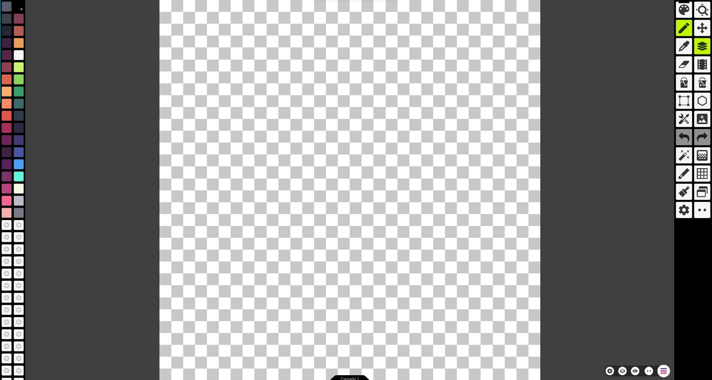

Aplicando uma ideia
Aqui estão os passos básicos para criar uma pixel art: Escolha uma ferramenta de edição de imagem adequada para criar pixel art, Defina o tamanho da sua imagem e a resolução em pixels.
Criando a base da art
Escolha uma paleta de cores limitada para usar em sua arte, Desenhe sua imagem pixel por pixel, prestando atenção aos detalhes e sendo paciente.
aplicando cores e finalizando
Use ferramentas como o balde de tinta e o pincel para preencher áreas maiores com cor, Adicione sombras e destaques para dar profundidade à sua imagem, Refine sua imagem, ajustando cores e adicionando detalhes até que esteja satisfeito com o resultado final.
Exemplo de animaçao de pixel arts
Pratique bastante
Lembre-se de que a criação de pixel art pode ser um processo demorado e requer prática e dedicação. Com o tempo, você desenvolverá suas habilidades e poderá criar belas obras de arte em pixel!